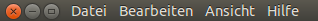

Unity Desktop
Dieser Artikel wurde für die folgenden Ubuntu-Versionen getestet:
Ubuntu 14.04 Trusty Tahr
 Dieser Artikel dient als Ergänzung zum Übersichtsartikel Unity und beschreibt die Leiste am oberen Bildschirmrand. Diese wird auch oft als Panel bezeichnet. Entstanden ist sie als Weiterentwicklung aus dem Panel der Desktop-Umgebung GNOME 2.
Dieser Artikel dient als Ergänzung zum Übersichtsartikel Unity und beschreibt die Leiste am oberen Bildschirmrand. Diese wird auch oft als Panel bezeichnet. Entstanden ist sie als Weiterentwicklung aus dem Panel der Desktop-Umgebung GNOME 2.
Das Desktop-Menü im Panel¶
Das oberhalb vom Desktop angeordnete Panel kann je nach Aktivität auf dem Desktop unterschiedliche Zustände annehmen. Der nachfolgende Artikel befasst sich mit der Funktion "Desktop-Menü" – nicht jedoch mit dem Inhalt seitens der einzelnen Anwendungen.
Die Transparenz vom Panel kann man mit dem CompizConfig Einstellungs-Manager einstellen unter:
"Arbeitsfläche -> Ubuntu Unity Plugin -> Experimental -> Panel Opacity"
Anzeige ohne Aktivität¶
Das Panel stellt sich – solange keine Anwendung gestartet wurde – wie folgt dar:
Hier werden in Applets Anzeigen von Anwendungen, die aktuellen System-Informationen (Benachrichtigung), die Zeit- und Datumseinstellung, die aktuellen Benutzer-Informationen sowie der Systemwechsel-Button angezeigt. Zu Details siehe die Beschreibung weiter unten.
Wenn keine Anwendungen gestartet sind oder keine der Anwendungen den Fokus hat, wird das "Desktop-Menü" sichtbar, sobald der Anwender mit die Maus über den freien Teil zwischen der Bezeichnung: "Ubuntu-Arbeitsfläche" und den Indikatoren im Panel bewegt. Dieses "Desktop-Menü" ist in wesentlichen Teilen dem des Nautilus-Menüs ähnlich.
Ein Menüpunkt ist dabei die "Hilfe", die eine ausführliche Übersicht (in Englisch) zu Ubuntu und Unity liefert.
Anzeige bei Aktivität¶
Sobald Anwendungen auf dem Desktop liegen und den Fokus haben, wird die Bezeichnung dieser Anwendung (Fenstername) im oberen Unity-Panel angezeigt:
Bewegt der Anwender den Mauszeiger (Mouseover-Effekt) über das Panel, wird zusätzlich das Fenstermenü der aktiven Anwendung im Unity-Panel angezeigt:
und die Anwendung kann hier bedient werden (zur Zeit ist die Funktion "global-menu" noch nicht für alle Anwendungen umgesetzt). Dabei wird die Bezeichnung der Anwendung teilweise eingekürzt bzw. vom Menü überdeckt.
Sonderfall maximiertes Fenster¶

Einen Sonderfall stellt ein maximiertes Fenster dar. Die Knöpfe für das
Schließen, Minimieren und Maximieren
werden von der Fensterleiste in das obere Unity-Panel verlagert. Die anderen oben beschriebenen Panel-Effekte bleiben erhalten.
Hinweis:
Die Anordnung dieser Knöpfe auf der linken Seite des Fensters sollten so belassen werden, da es sonst beim Maximieren der Fenster zu fehlerhafter Darstellung kommen kann!
Die Indikatoren¶
Im rechten Teil des Panels befinden sich die sogenannten "Indikatoren". Jeder Indikator besteht aus einem Symbol oder Text und einem Menü, das sich öffnet, wenn man auf das Symbol oder den Text klickt. In einigen Fällen reagiert das Symbol auch auf Mausrad-Bewegungen.
Hinweis:
Man beachte den bei anderen Desktop-Umgebungen üblichen Unterschied zwischen Benachrichtigungsfeld und Benachrichtigungsanzeige. Nur letztere enthält "echte" Indikatoren (siehe auch den Abschnitt Traditionelle Applets weiter unten).
Nachrichten-Indikator¶
= indicator-messages
In diesem Indikator-Applet werden Anwendungen mit "kommunikativen" Charakter wie:
gebündelt. Es können Anwendungen aus diesem Indikator-Applet sowohl entfernt als auch andere hinzugefügt werden. Dazu muss man nur im Verzeichnis
/usr/share/indicators/messages/applications
die entsprechende Dateien entfernen bzw. adäquate Dateien hinzufügen. Jede Datei dort trägt den Namen des entsprechenden Programms und enthält eine Zeile mit dem Pfad der zum jeweiligen Programm gehörenden .desktop-Datei. Zum Beispiel ist für Thunderbird die Datei /usr/share/indicators/messages/applications/thunderbird mit dem Inhalt:
1 | /usr/share/applications/thunderbird.desktop |
zuständig. Eine Alternative zum Nachrichten-Indikator bietet Unity Mail.
Audio-Indikator¶
= indicator-sound
In diesem Indikator kann die Lautstärke eingestellt, entweder indem man die Maus auf das Indikator-Symbol bewegt und am Mausrad dreht, oder indem man das Indikator-Menü öffnet und den lautstärke-Regler dort benutzt.
Außerdem gibt es einige Bedienelemente für installierte Medien-Abspieler (z.B. Rhythmbox) und einen Menüeintrag, um den Audio-Einstellungsdialog in den Systemeinstellungen zu öffnen.
Datums-Indikator¶
= indicator-datetime
Die Anzeige von Datum und Uhrzeit erfolgt in diesem Applet. Die Anzeige, der Aufbau und die Bedienung weichen vom früher verwendeten "DateTime"-Applet ab. Zur Einstellung der Anzeige kann man sowohl den Unity-eigenen Konfigurations-Editor benutzen oder das direkt vornehmen. Dazu klickt man mit der  auf das Applet und wählt im folgenden Kontextmenü den Punkt
auf das Applet und wählt im folgenden Kontextmenü den Punkt
"Zeit- & Datumseinstellung"
Es wird das Einstellfenster angezeigt, in dem man nach der Freigabe u.a. folgende Punkte bearbeiten kann.
"Datum & Uhrzeit"
Zeitzone
Synchronisation
"Uhr"
diverse Parameter
Anzeige im Panel-Applet
Anzeige nach dem DropDown
Einbindung Evolution
(zusätzliche) Orte / Zeiten
Benutzer-Indikator¶
= indicator-me
Im Indikatorapplet werden die aktiven Benutzer und deren Nutzungsverhalten gesetzt bzw. angezeigt. Des weiteren sind hierüber die internen Daten der Nutzer abrufbar. Hierüber wird ggf. das Bild des Benutzers für den Anmeldebildschirm vorgegeben.
Hinweis:
Ab Ubuntu 11.10 erfolgt in einem System mit nur einem Benutzer keine Benutzeranzeige, wenn LightDM installiert ist und in der Konfigurationsdatei /etc/lightdm/lightdm.conf die Option allow-guest=false gesetzt ist.
Sollte es wider Erwarten mit der Entfernung nicht klappen, hilft eventuell dieser Artikel weiter: Unity – Do not display user name in the panel
Sitzungs-Indikator¶
Die Sitzungsanzeige ist im Wesentlichen identisch mit dem bisherigen Applet "Systemwechsel", nur dass zusätzlich die Funktionen "Systemeinstellungen" eingebracht wurde. Diese ist in der Basisinstallation ab Ubuntu 11.10 mit den Systemeinstellungen verbunden. Man kann diese Anwendung entfernen bzw. weitere eigene Anwendungen hinzufügen. Dazu muss man nur im Verzeichnis /usr/share/indicators/session/applications die relevante Datei entfernen bzw. adäquate Dateien hineinkopieren. Diese Dateien sind in der Regel ein symbolischer Link auf vorhandene .desktop-Dateien.
Änderungen in diesem Verzeichnis werden erst bei der nächsten Anmeldung wirksam. Mit dem folgenden Befehl im Terminal wird das Verzeichnis von der Sitzungsanzeige neu eingelesen. Änderungen werden damit unmittelbar wirksam:
killall -USR1 indicator-session-service
Weitere Indikatoren¶
Nachfolgend eine Auswahl von Indikatoren für das Panel, die getrennt installiert werden können. Eine Liste bzw. Übersicht verfügbarer Indikator-Applets findet man u.a. bei Askubuntu.com  . Die Installation erfolgt wie jede andere Anwendung auch; die entsprechenden Beispiele für eine Installation aus den Ubuntu-Archiven, aus einem PPA-Archiv bzw über ein "deb"-Paket sind nachfolgend aufgeführt.
. Die Installation erfolgt wie jede andere Anwendung auch; die entsprechenden Beispiele für eine Installation aus den Ubuntu-Archiven, aus einem PPA-Archiv bzw über ein "deb"-Paket sind nachfolgend aufgeführt.
Wetter-Indikatoren¶
Siehe Wetteranzeige.
Bildschirmfotos¶
= indicator-shutter
Um den Shutter-Indicator zum Panel hinzufügen zu können, muss zuerst das Programm Shutter (ab Version 0.89) installiert werden.
Nach dem Aufruf des Programms wird der Indikator in das Panel geladen. Soll dieser dauerhaft im Panel bleiben, finden sich im Menüpunkt "Bearbeiten -> Einstellungen -> Verhalten -> Verhalten beim ersten Start", entsprechende Menüpunkte, um "Shutter beim Anmelden automatisch ausführen" und "Fenster beim ersten Start nicht anzeigen" zu aktivieren. Mit dem nächsten Start wird der Indikator, ohne dass sich das Programm öffnet, angezeigt sowie auch als Startprogramm eingetragen.
Systemmonitor¶
= indicator-multiload
Um eine Anzeige der Systemlast im Panel zu erhalten, muss das Paket
indicator-multiload (universe)
 mit apturl
mit apturl
Paketliste zum Kopieren:
sudo apt-get install indicator-multiload
sudo aptitude install indicator-multiload
installiert sein. Aufgerufen wird das Applet nach der Installation einmalig über die
Kommandozeile (aufrufen mit Alt + F2 ) und der Eingabe von
indicator-multiload
⏎
Danach kann es wie das bisherige Panel-Applet "Systemmonitor" konfiguriert werden.
Neu ist unter den Einstellungen:
"Hintergrundfarbe" - diese kann man auch mit Transparenz (Deckkraft: gegen 0, Farbname: #000000) versehen
"Autostart" - damit kann man einstellen, ob das Applet schon beim Anmelden starten soll.
Classic Menu Indicator¶
= classicmenu-indicator
Wer das normale Drop-Down-Menü für die Auswahl der Anwendungen vermisst, kann das Applet ClassicMenu Indicator  installieren und von dort aus die Anwendungen aufrufen.
installieren und von dort aus die Anwendungen aufrufen.
Seit Ubuntu 13.04 ist ClassicMenu Indicator in den offiziellen Paketquellen enthalten.
classicmenu-indicator (universe, ab Ubuntu 13.04)
mit apturl
Paketliste zum Kopieren:
sudo apt-get install classicmenu-indicator
sudo aptitude install classicmenu-indicator
In älteren Ubuntu-Versionen kann man ClassicMenu Indicator direkt vom Entwickler bekommen:
Hinweis!
Fremdpakete können das System gefährden.
Dazu lädt man das Paket classicmenu-indicator_0.08ubuntu2_all.deb  herunter und installiert es über ein Terminal mit der Eingabe von:
herunter und installiert es über ein Terminal mit der Eingabe von:
sudo dpkg -i ~/Downloads/classicmenu-indicator_0.08ubuntu2_all.deb
Alternativ kann man auch das PPA des Entwicklers verwenden.
Zur erstmaligen Anzeige aufgerufen wird es z.B. durch die Eingabe von:
Windows + A
classicmenu-indicator # ohne sudo!
⏎
Damit wird diese Anwendung sowohl im Panel eingetragen als auch ein entsprechender Eintrag für das Startmenü generiert.
Zwischenablage-Indikatoren¶
Einige mit Unity kompatible Zwischenablage-("Clipboard")-Manager werden im Artikel Zwischenablage aufgelistet.
Netzwerk-Indikatoren¶
Je nach Rechner- Ausstattung mit Kabelgebundener- und / oder Drahtloser- Verbindungen wechselt das Indikatorbild zwischen diesen beiden Verbindungsarten.
= Kabelgebundene Verbindung
= Drahtlose Verbindungen
Weiter Informationen sind im NetworkManager zu finden.
Indikatoren verbergen¶
Um Indikatoren für einzelne Benutzer zu verbergen, wie dies bei den meisten Desktop-Systemen der Fall ist, wird ein Blacklist-Eintrag erstellt:
mkdir -p ~/.config/indicators/messages/applications-blacklist/ ln -s /usr/share/indicators/messages/applications/ZU_VERBERGENDER_INDIKATOR ~/.config/indicators/messages/applications-blacklist/
Sollen diese systemweit ausgeblendet werden, muss die jeweilige Indikatordatei aus /usr/share/indicators/messages/applications/ in einen zu erstellenden Ordner verschoben werden, z.B. nach /usr/share/indicators/alte_dateien.
Traditionelle Applets¶
Traditionelle Applets im Benachrichtigungsfeld, wie sie von einigen anderen Arbeitsumgebungen bekannt sind, können unter Unity nur benutzt werden, wenn sie in einer Freigabeliste enthalten sind. Diese Freigabeliste lässt sich bis einschließlich Ubuntu 12.10 relativ einfach ändern (siehe nächster Abschnitt). Änderungen werden erst aktiv, nachdem man sich ab und wieder neu angemeldet hat.
Ab Ubuntu 14.04 kann ein Paket aus einer Fremdquelle eingesetzt werden. Siehe Systemtray-freischalten.
Im Terminal aktivieren¶
Der einfachste Weg, um alle Applets anzeigen zu lassen, führt über das Terminal [1]. Dazu gibt man folgenden Befehl ein:
gsettings set com.canonical.Unity.Panel systray-whitelist "['all']"
Dies schaltet alle Applets frei, so dass diese angezeigt werden können. Möchte man hingegen nur ein Applet anzeigen lassen (in diesem Falle Dropbox), so nutzt man diesen Befehl:
gsettings set com.canonical.Unity.Panel systray-whitelist "['JavaEmbeddedFrame', 'Wine', 'Skype', 'hp-systray', 'Dropbox']"
Mit folgendem Befehl kann man sich die freigeschalteten Applets anzeigen lassen:
gsettings get com.canonical.Unity.Panel systray-whitelist
Per GUI aktivieren¶
Mit dem Unity/Unity Einstellungen kann man die Freigabeliste auch ohne die Kommandozeile ändern. Dort navigiert man sich in der linken Spalte zu "com → canonical → unity → panel", wählt dann in der Spalte "Name" die Zeile "systray-whitelist" und gibt in der rechten Spalte (unter Value) den Wert all ein. Möchte man hingegen nur, um beim Beispiel zu bleiben, Dropbox aktivieren, fügt man der existierenden Liste den Wert Dropbox hinzu.
Problembehebung¶
Unity und 3D¶
Der Unity-3D-Desktop als "Compiz-Plugin" wurde erstmalig mit Ubuntu 11.04 eingesetzt. Weil sich Unity immer noch in Entwicklung befindet, können bestimmte Funktionen und Einstellungen fehlerhaft, durch andere ersetzt worden sein oder auch nicht (mehr) funktionieren! Mark Shuttleworth strebt als Zeitpunkt der Fertigstellung Ubuntu 14.04 an.
Insbesondere können sich die Bezeichnungen im Zuge von Anpassungen oder Übersetzungen ändern. Der Unity-3D-Desktop verlangt auf dem verwendeten Computer ein funktionierendes Compiz (ausreichende 3D-Beschleunigung), um korrekt zu funktionieren.
Uhrzeit und Datum wird nicht angezeigt¶
Sollten Uhrzeit und Datum im Panel nicht angezeigt werden und kann man die Anzeige auch nicht über "Systemeinstellungen -> Zeit & Datum -> Uhr" aktivieren, dann hilft die Eingabe des folgenden Befehls im Terminal:
pkill -f indicator-datetime-service
Danach sollte die Zeit angezeigt werden und auch über das oben genannte Menü konfiguriert werden.
Links¶
Intern¶
Unity Desktop
 Übersichtsartikel
ÜbersichtsartikelUnity Startmenü - Bedienung
Unityund AnwendungenUnity Arbeitsbereich - Anpassungen an Verhalten, Aussehen und Tuning
Konfiguration - Im Unity-Editor und im Terminal (Befehle und Funktionen)
Compiz Informationen zum Composite- und Fenstermanager
CCSM - der Einstellungs-Manager "CompizConfig"
- Erstellt mit Inyoka
-
 2004 – 2017 ubuntuusers.de • Einige Rechte vorbehalten
2004 – 2017 ubuntuusers.de • Einige Rechte vorbehalten
Lizenz • Kontakt • Datenschutz • Impressum • Serverstatus -
Serverhousing gespendet von